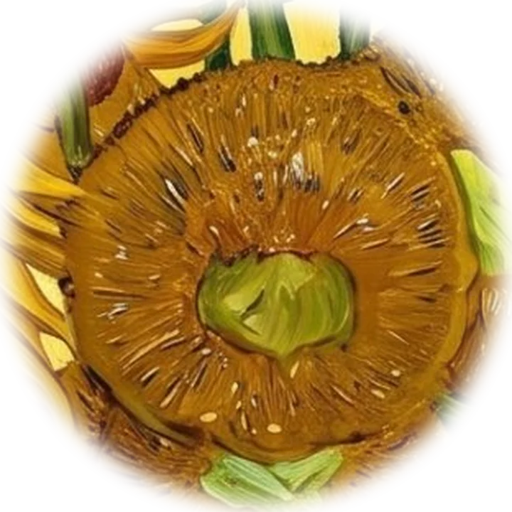

Contact
Gratitude and friendship
In August 1888 Van Gogh began painting sunflowers to decorate the studio he hoped to share with Paul Gauguin: a welcome, prepared before the guest arrived. Eighteen months later he wrote what the canvases meant to him.
“…they express an idea symbolizing ‘gratitude.’”Vincent van Gogh to Albert Aurier, Saint-Rémy, 9 or 10 February 1890
If a tool here helped you, if you spotted something wrong, or if you’d like to work on a problem together, write to me. Van Gogh would have written a letter, so this page does too.
Write a letter
Elsewhere
Sources
- Van Gogh to Theo, Arles, 21 or 22 August 1888, letter 666: “In the hope of living in a studio of our own with Gauguin, I’d like to do a decoration for the studio. Nothing but large Sunflowers.”
- Van Gogh to Albert Aurier, Saint-Rémy, 9 or 10 February 1890, letter 853.